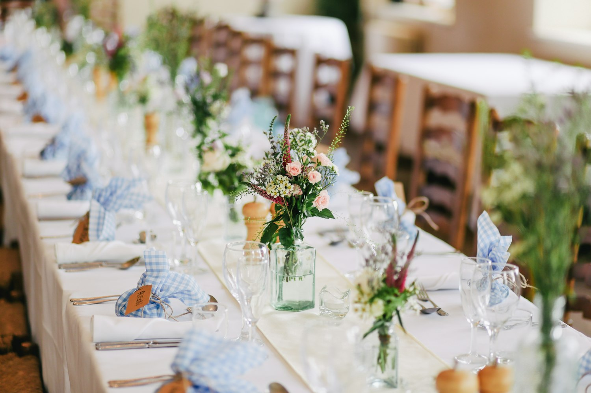
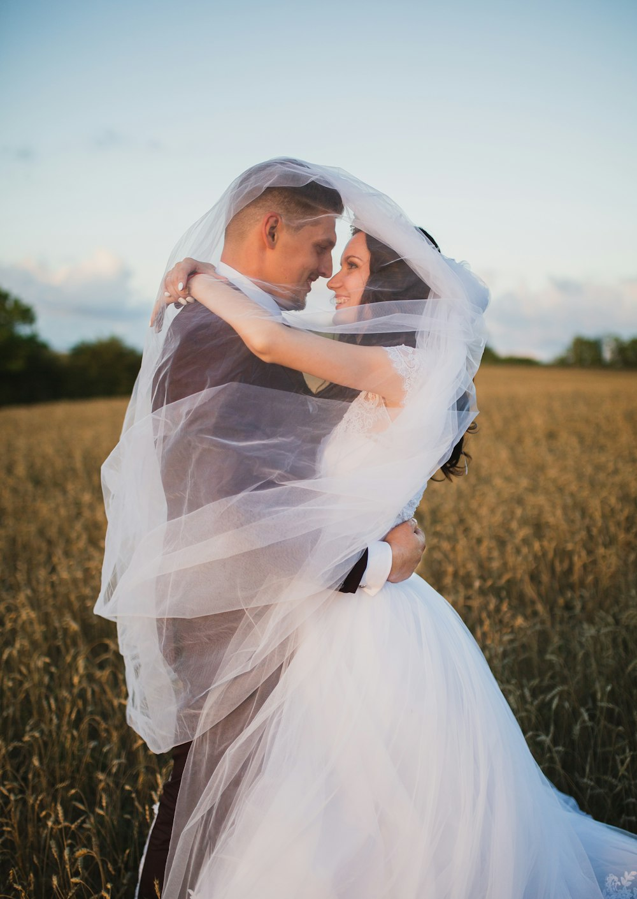

суббота, 6 июня 2026
ИльяиСоня
эко-отель «Заречье» · берег Ветлуги
Крутите. День пойдёт своим чередом
15:40дорога

16:00
Сбор
Стол уже накрыт. Приезжайте раньше — до воды десять шагов.
17:30
Церемония
На берегу. Если пойдёт дождь — в оранжерее. Но дождя не будет.
18:20фотосессия
19:30
Ужин
Длинный стол, местная рыба, тосты не по списку.
21:07
Закат
Солнце сядет ровно в 21:07. Мы попросим всех выйти к воде.

22:40
Танцы
Пока горят гирлянды. То есть долго.
23:30фейерверк
00:00
Останетесь?
- Где
- «Заречье», деревня Затон
90 км от Нижнего Новгорода - Одежда
- лён, светлое,
обувь для травы - Вопросы
- Илья +7 903 000-11-24
Соня +7 903 000-11-25
до встречи на берегу